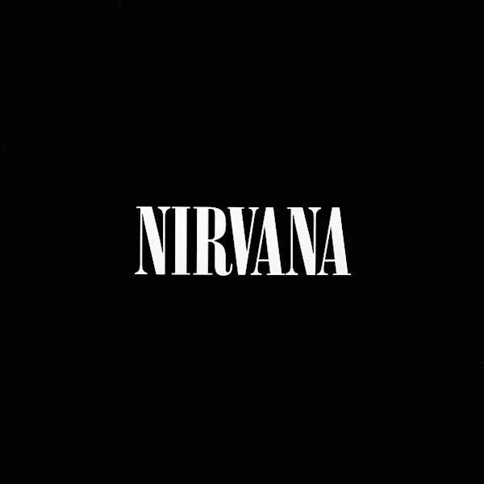

You Know You're Right

Kurt Cobain’s journey, both personal and musical, was one of raw intensity, artistic genius, and deep internal struggle. From his early days in Aberdeen, Washington, where he felt like an outcast, to forming Nirvana and rising to global fame, his life was a paradox of success and suffering. Nevermind (1991) made Nirvana a household name, but the sudden explosion of fame overwhelmed Cobain, who never sought mainstream approval. He saw Nirvana as an underground punk band, yet they had become the face of an entire generation’s discontent. The pressure of celebrity, combined with his battles with addiction and depression, weighed heavily on him.
By the time In Utero (1993) was released, Cobain was disillusioned with the industry and fame itself. He struggled with the contradiction of being a punk icon while also being consumed by the very system he despised. His heroin addiction worsened, and his personal life—particularly his marriage to Courtney Love—became increasingly turbulent. Attempts at rehab and intervention from friends did little to pull him back. In the final months of his life, he seemed to retreat further into himself, culminating in his tragic suicide on April 5, 1994.
Looking back, Cobain’s story feels like an inevitable clash between artistic purity and commercial reality. He gave the world his pain and his truth, but in the end, the weight of it all proved too much. Nirvana’s music still resonates, not just because of its sound, but because of the honesty behind it—a reminder of the cost that sometimes comes with brilliance.
| Nirvana: A Comprehensive Overview | ||
|---|---|---|
| Band Members | Kurt Cobain (Vocals, Guitar) | |
| Krist Novoselic (Bass) | ||
| Dave Grohl (Drums) | ||
| Other Drummers | Chad Channing | |
| Dale Crover | ||
| Aaron Burckhard | ||
| Discography | Album | Notable Songs |
| Bleach (1989) | About a Girl, Negative Creep | |
| Nevermind (1991) | Smells Like Teen Spirit, Come as You Are, Lithium | |
| In Utero (1993) | Heart-Shaped Box, Rape Me, Dumb | |
| Impact & Legacy | Grunge, Punk Rock, Alternative Rock | |
| Defined the grunge movement, reshaped mainstream rock | ||
| Still influences modern rock and punk artists | ||
| Post-1994 | Krist Novoselic | Various projects, including politics & Giants in the Trees |
| Dave Grohl | Founded Foo Fighters, became a major rock figure | |
| Tragic End | Cause of Death | Suicide (April 5, 1994) |
| Final Note | Addressed to "Boddah" (his childhood imaginary friend) | |
| Last Words in Note | "It’s better to burn out than to fade away." | |